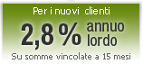

| Invieremo il buono acquisto all’indirizzo email che indicherai nel modulo di apertura. | ||
| Solo per richieste entro il 10/11/2010 e attivazione del conto entro il 30/11/2010 |
REGOLAMENTO ISTRUZIONI |
|
|
> TUTTO IN 1 <<" style="font-size: 18px; font-weight: bold; letter-spacing: -2px">  |
|